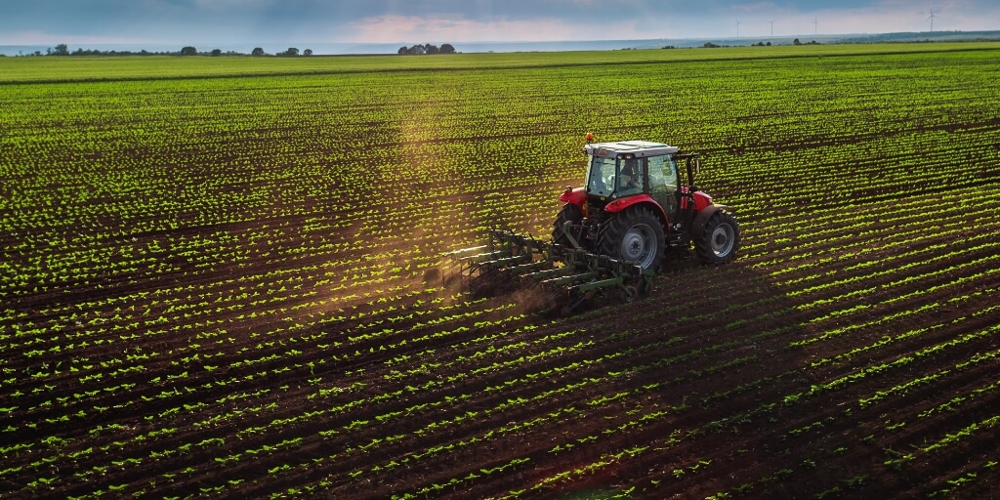
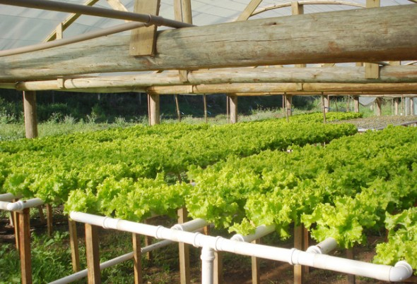
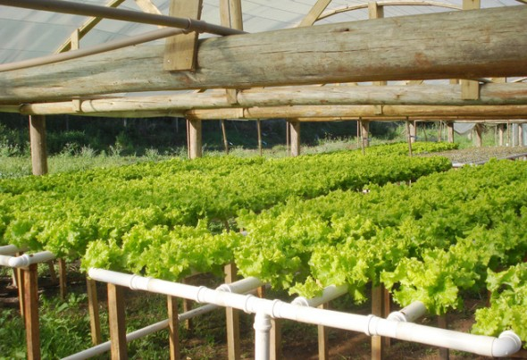

SOBRE
Bem-vindo(a) ao nosso site! Aqui, você encontrará informações sobre agricultura sustentável, inteligência artificial na agricultura e modelos de cultivo inovadores. Descubra como esses temas podem contribuir para uma agricultura mais eficiente e sustentável. Explore nosso conteúdo e encontre soluções para otimizar o uso de recursos, aumentar a produtividade e garantir a qualidade dos alimentos. Navegue pelo site e aproveite todas as informações disponíveis.
NOSSA GALERIA


 
